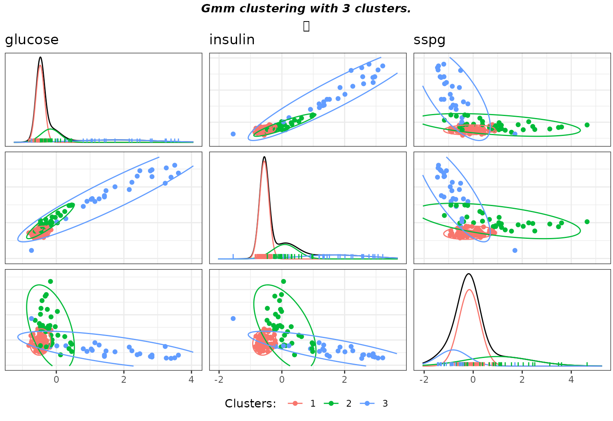
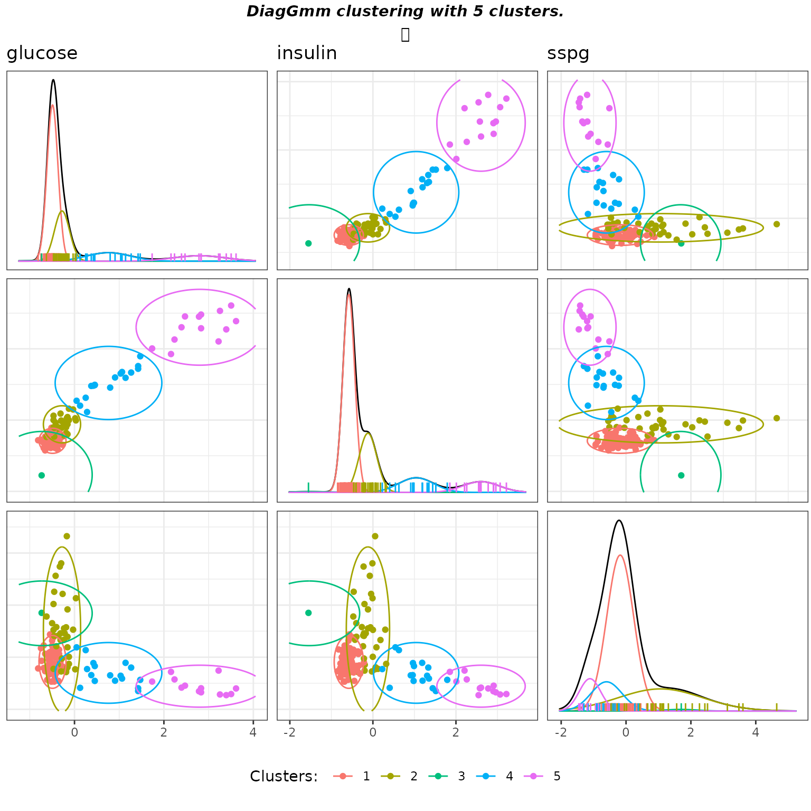
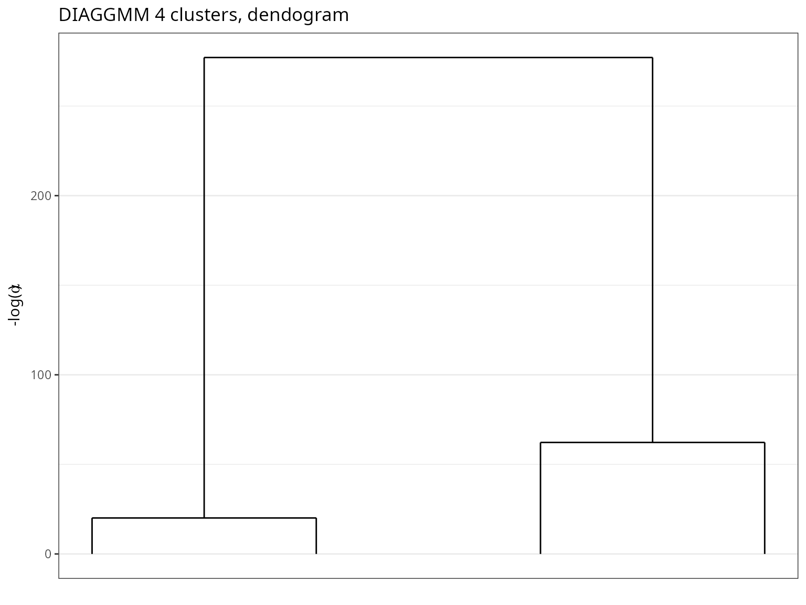
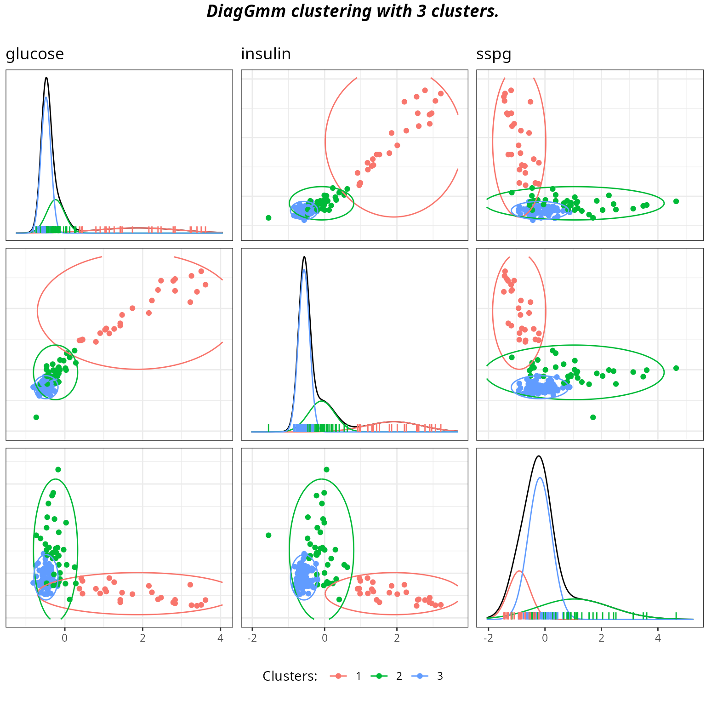
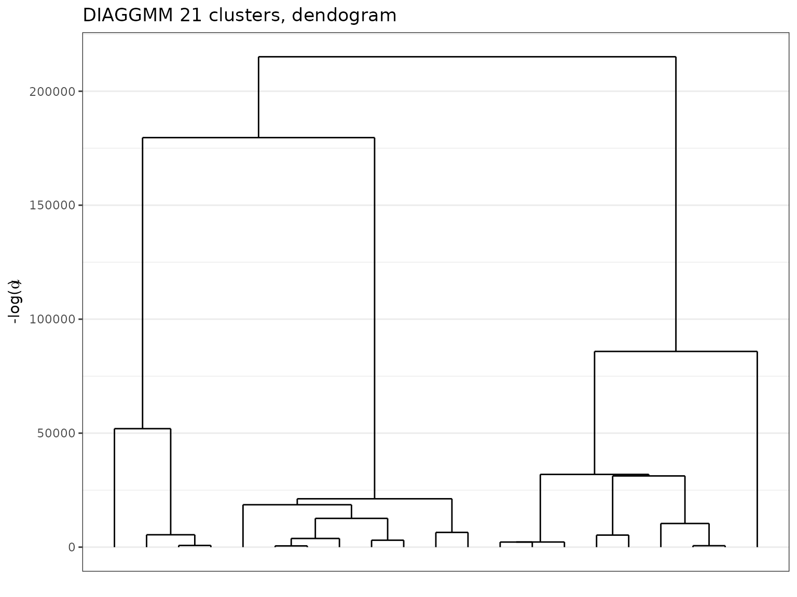
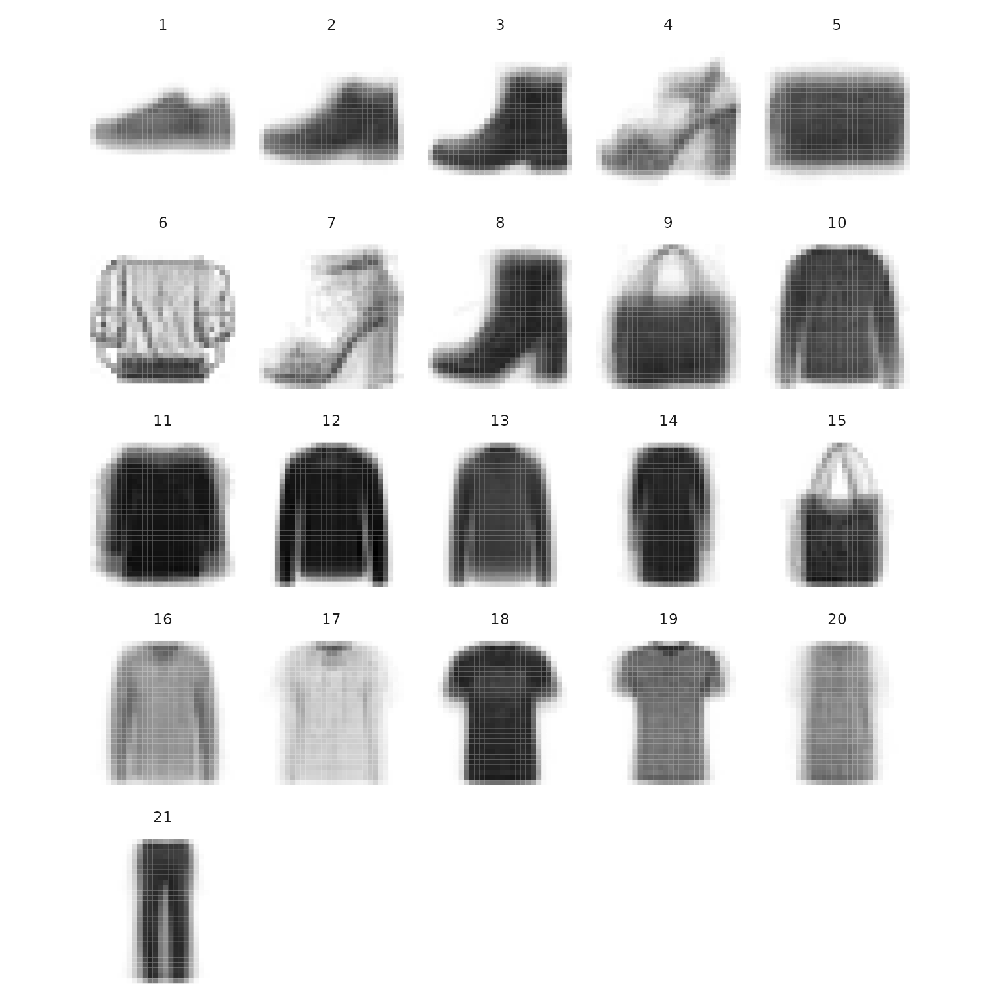

Loads packages and set a future plan for parallel processing if you want.
library(greed)
library(mclust)
#> Package 'mclust' version 5.4.7
#> Type 'citation("mclust")' for citing this R package in publications.
library(ggplot2)
set.seed(2134)Full covariance matrix
Gaussian Mixture Models (GMMs) are treated in greed in a Bayesian fashion with typical conjugate priors. \[ \begin{align} \pi&\sim Dirichlet(\alpha)\\ Z_i&\sim \mathcal{M}(1,\pi)\\ V_k&\sim \mathcal{W}(\varepsilon^{-1},n_0)\\ \mu_k&\sim \mathcal{N}(\mu,(\tau V_k)^{-1})\\ X_{i}|Z_{ik}=1 &\sim \mathcal{N}(\mu_k,V_{k}^{-1})\\ \end{align} \] Contrary to other models, these priors are informative and may therefore have a sensible impact on the obtained results. By default, the priors parameters are set as follow:
- \(\alpha=1\)
- \(\mu=\bar{X}\)
- \(\tau=0.01\)
- \(n_0=d\)
- \(\varepsilon=0.1diag(var(X))\)
See ?`gmm-class` for more details. These values were chosen to accommodate a variety of situation. Lets look at the results with the diabetes dataset:
data(diabetes)
X=diabetes[,-1]
sol = greed(X,model=new("gmm"))
#> ------- GMM model fitting ------
#> ################# Generation 1: best solution with an ICL of -2451 and 7 clusters #################
#> ################# Generation 2: best solution with an ICL of -2419 and 4 clusters #################
#> ################# Generation 3: best solution with an ICL of -2406 and 3 clusters #################
#> ################# Generation 4: best solution with an ICL of -2406 and 3 clusters #################
#> ################# Generation 5: best solution with an ICL of -2406 and 3 clusters #################
#> ------- Final clustering -------
#> ICL clustering with a GMM model, 3 clusters and an icl of -2406.
table(diabetes$cl,sol@cl)
#>
#> 1 2 3
#> Chemical 11 24 1
#> Normal 73 3 0
#> Overt 0 6 27To get an overview of the clustering results, you may use the gmmpairs plot function:
gmmpairs(sol,X)
#> Registered S3 method overwritten by 'GGally':
#> method from
#> +.gg ggplot2
The obtained results are those expected and correspond to the known groups. If you want to experiments with other values for the prior parameters, the most important is \(\varepsilon\), which control the covariance matrix Whishart prior. You may try smaller values for example. In this case, you may also decrease \(\tau\) to keep a flat priors on clusters means. For the diabetes data such choices leads to an interesting solution where one cluster is then used to fit one outlier.
data(diabetes)
X=diabetes[,-1]
sol = greed(X,model=new("gmm",epsilon=0.01*diag(diag(cov(X))), tau =0.001))
#> ------- GMM model fitting ------
#> ################# Generation 1: best solution with an ICL of -2487 and 10 clusters #################
#> ################# Generation 2: best solution with an ICL of -2473 and 8 clusters #################
#> ################# Generation 3: best solution with an ICL of -2435 and 5 clusters #################
#> ################# Generation 4: best solution with an ICL of -2431 and 4 clusters #################
#> ################# Generation 5: best solution with an ICL of -2431 and 4 clusters #################
#> ------- Final clustering -------
#> ICL clustering with a GMM model, 4 clusters and an icl of -2431.
gmmpairs(sol,X)
table(diabetes$cl,sol@cl)
#>
#> 1 2 3 4
#> Chemical 12 23 1 0
#> Normal 74 2 0 0
#> Overt 0 3 0 30
Diagonal covariance matrix
You may also used diagonal covariance matrix. The ?`diaggmm-class` allow to use such GMM type model. If you try such model on the previous diabetes dataset, greed this time found a 4 components GMM.
data(diabetes)
X=diabetes[,-1]
soldiag = greed(X,model=new("diaggmm"))
#> ------- DIAGGMM model fitting ------
#> ################# Generation 1: best solution with an ICL of -2465 and 4 clusters #################
#> ################# Generation 2: best solution with an ICL of -2465 and 4 clusters #################
#> ------- Final clustering -------
#> ICL clustering with a DIAGGMM model, 4 clusters and an icl of -2465.
gmmpairs(soldiag,X)
table(diabetes$cl,soldiag@cl)
#>
#> 1 2 3 4
#> Chemical 12 24 0 0
#> Normal 73 3 0 0
#> Overt 0 7 13 13
You may still look at coarser clustering and inspect the clustering dendogram:
plot(soldiag,type='tree')
solK3 = cut(soldiag,3)
table(diabetes$cl,solK3@cl)
#>
#> 1 2 3
#> Chemical 12 24 0
#> Normal 73 3 0
#> Overt 0 7 26
gmmpairs(solK3,X)
The clusters corresponds to the known group and if we compare the ICL of the, between the full model:
sol@icl
#> [1] -2430.727
soldiag@icl
#> [1] -2465.102The full model seems preferable on this dataset. If you want to look at the mixture component parameters you may acces their Maximum a Posteriori estimate with the generic coef function.
params = coef(solK3)
params$Sigmak[[2]]
#> [,1] [,2] [,3]
#> [1,] 451.5805 0.00 0
#> [2,] 0.0000 13879.21 0
#> [3,] 0.0000 0.00 25363Such simpler diagonal model may be of interest in particular for high dimensional settings for two reasons. First, the number of parameters (even if they are integrated out in the clustering phase) is reduced and this can be interesting when \(d\) is important, but also because the prior maybe defined such that it will be less informative. You may try with a subset of the fashion mnist data provided with the package which contains 784 dimensionals vectors (28x28 flattened images). In such settings, you may also want to switch the optimization algorithm to ?`seed-class`, this algorithm is less efficient than the hybrid algorithm used by default by greed. But, since it relied on a seeded initialization it is also a little bit less costly. In this case, you may increase the initial value for \(K\) since, this algorithm is not able to find an clustering with a number of cluster bigger than the value of \(K\) provided by the user. Still, it may simplify the clustering and return an optimal clustering with less clusters.
data("fashion")
dim(fashion$X)
#> [1] 1000 784
sol=greed(fashion$X,model=new("diaggmm"),alg=new("seed"),K=60)
#> ------- DIAGGMM model fitting ------
#> ------- Final clustering -------
#> ICL clustering with a DIAGGMM model, 22 clusters and an icl of -3587798.On this more complex dataset, we may look at the dendogram which is more interesting with the complex structure of these data.
plot(sol,type='tree')
Finally if we look at the clusters centers, they look coherent and thanks to the hierarchical ordering performed by greed are also well organized.
im_list=lapply(1:sol@K,function(k){
data.frame(i=rep(28:1,each=28),j=rep(1:28,28),v=t(sol@obs_stats$regs[[k]]$m),k=k)
})
ims = do.call(rbind,im_list)
ggplot(ims)+
geom_tile(aes(y=i,x=j,fill=v))+
scale_fill_gradientn(colors=c("#ffffff","#000000"),guide="none")+
scale_x_continuous(breaks=c())+scale_y_continuous(breaks=c())+facet_wrap(~k)+
coord_equal()+theme_minimal()+
theme(axis.title.x = element_blank(),axis.title.y = element_blank())